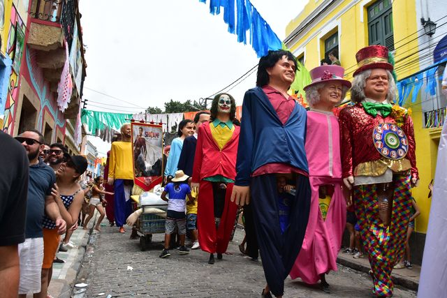
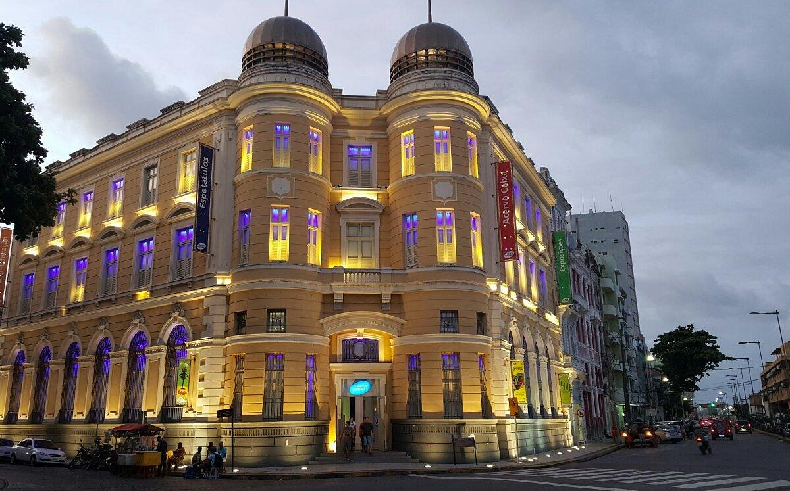

1. Embaixada dos Bonecos Gigantes
A Embaixada dos Bonecos Gigantes é um espaço cultural com exposição de bonecos famosos usados no carnaval de Olinda. Personagens da cultura pop e da política viram figuras enormes e encantam visitantes de todas as idades.
2. Centro Cultural Caixa
O Centro Cultural da Caixa Econômica funciona em um prédio histórico e abriga exposições de arte, teatro, música e muito mais. É um ponto importante para a preservação e divulgação da cultura no recife antigo.